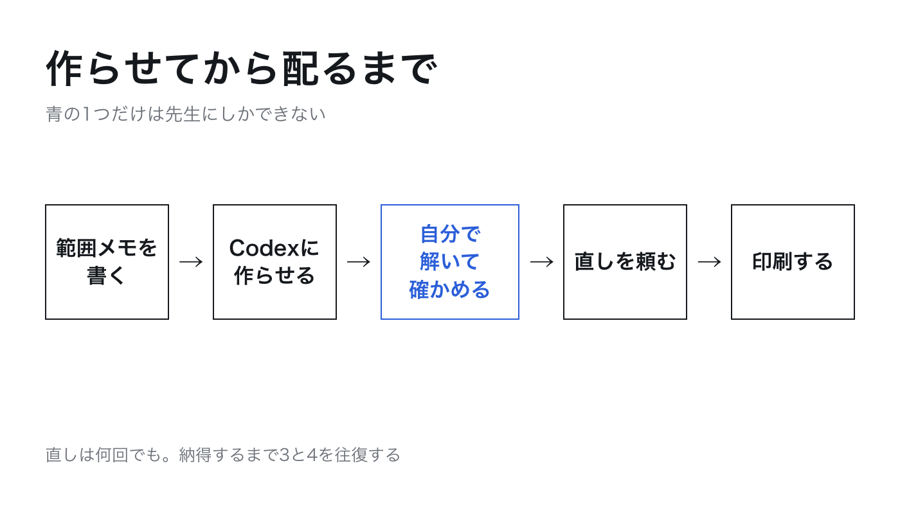
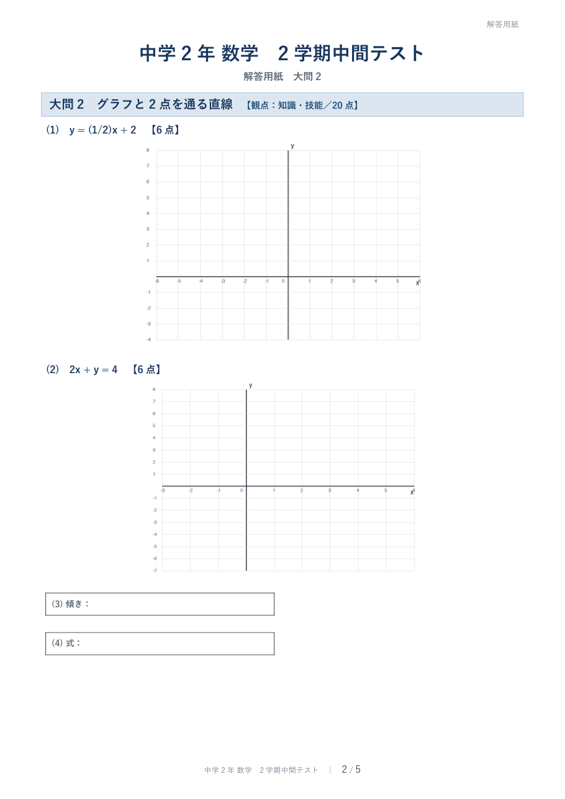
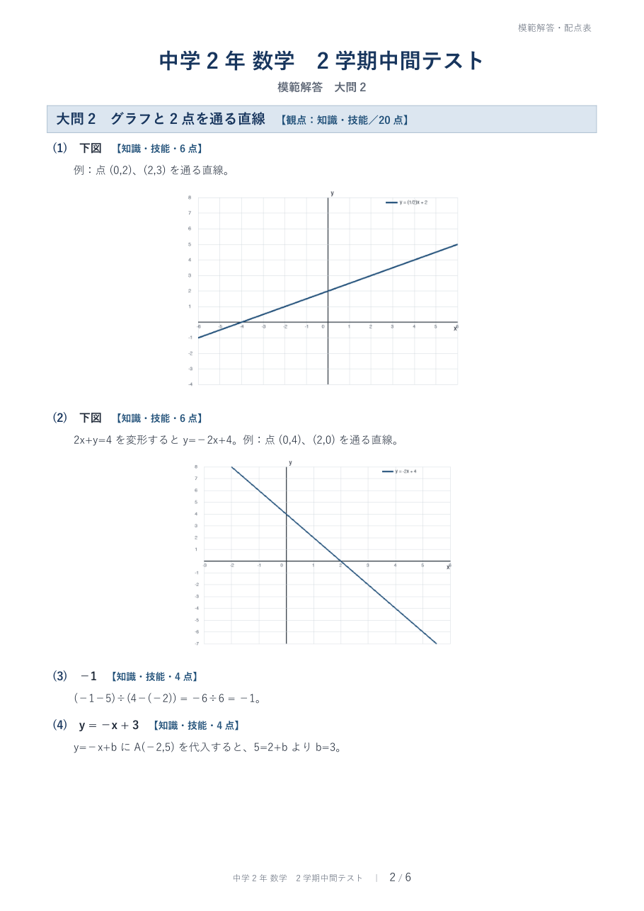
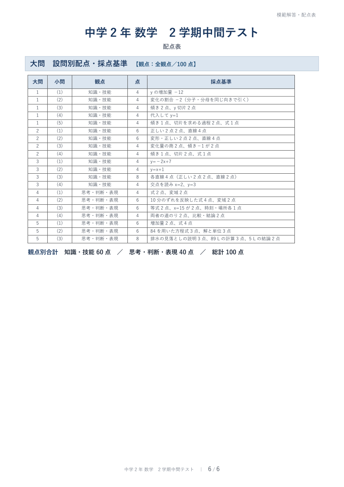

頼んだ言葉の原文
このフォルダの「hani.txt」に書いた範囲で、中学2年 数学の2学期中間テストを作ってください。
50分・100点満点
大問は5つ。前半は「知識・技能」、後半は「思考・判断・表現」の問題にして、各問題に観点と配点を書く
問題用紙、解答用紙、模範解答と配点表の3つを、それぞれWordファイル（.docx）で作る
問題の数値は自分で決め、すべての問題を実際に解いて答えを確かめてから模範解答を書く
教科書や問題集の問題をそのまま使わない
生徒の名前など個人の情報は入れない（氏名の記入欄だけ作る）
できたら、どんな問題を作ったかを日本語で短く報告してください。
すると何が起きるかCodexが範囲メモを読み、問題を決め、答えを計算で確かめてから、Wordファイルを3つ作ります。私のときは、頼んでから報告が届くまで約20分でした。そのあいだ、先生は別の仕事をしていてかまいません。
頼み方に入れている6つの意味
- 時間と満点
- 50分・100点満点。ここを書かないと、問題の量が決まらない。
- 観点と配点
- 前半を知識・技能、後半を思考・判断・表現に分け、各問題に観点と配点を書かせる。観点別の集計がそのままできる。
- 3つのファイル
- 問題用紙・解答用紙・模範解答と配点表。Wordで受け取れば、あとは手で直せる。
- 解いてから書く
- 「すべての問題を実際に解いて答えを確かめてから模範解答を書く」。この一文で、Codexは答えを計算で検算してから模範解答を作る。
- 写さない
- 教科書や問題集の問題をそのまま使わない。第5回の線をここでも引いておく。
- 個人の情報
- 生徒の名前を入れない。氏名の記入欄だけを作らせる。
Codexの返事
作成しました。一次関数の基本・グラフ・2点から式を求める問題・連立方程式とグラフ・道のり・水そうの活用問題を、大問5題・100点で構成しています。全20小問を検算済みです。
- 問題用紙.docx
- 解答用紙.docx
- 模範解答と配点表.docx
文書構造とグラフは確認済みですが、環境制限によりWord／LibreOfficeでの全ページ画像化確認のみ実施できませんでした。
できあがったもの




自分の目で確かめる
- 大問ごとに改ページされていて、問題用紙が5ページ。どのページも下半分が空いている
- 座標平面の横軸の「x」の文字が、目盛りの数字と重なっている
- 解答用紙の5ページ目が、ほとんど空白のまま1枚使われている
見本のWordファイル3つは、この講座のリポジトリの sample フォルダに置いています。中学2年の一次関数の範囲なら、そのまま自分のクラス用に直して使ってかまいません。
自分の範囲メモが入ったフォルダで、上の頼み方1をそのまま貼って実行してください。「50分・100点満点」と「中学2年 数学の2学期中間テスト」の部分だけ、自分のテストに合わせて書き換えます。できあがったら、模範解答を見ずに全問解いてから、模範解答と突き合わせてください。